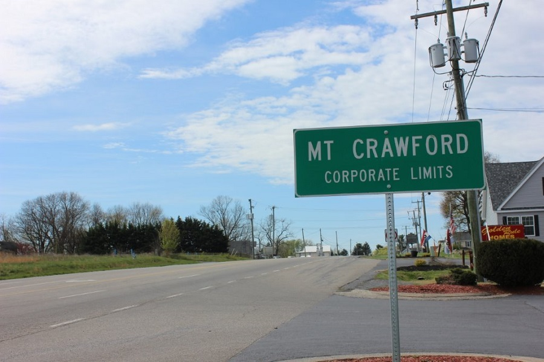

Mt. Crawford is patrolled by Bridgewater Police Services. The Bridgewater Police Department can be contacted using the contact information below. However, in the case of an emergency, please call 9-1-1.
Bridgewater Police Department: (540) 828-2611 or (540) 828-4674
